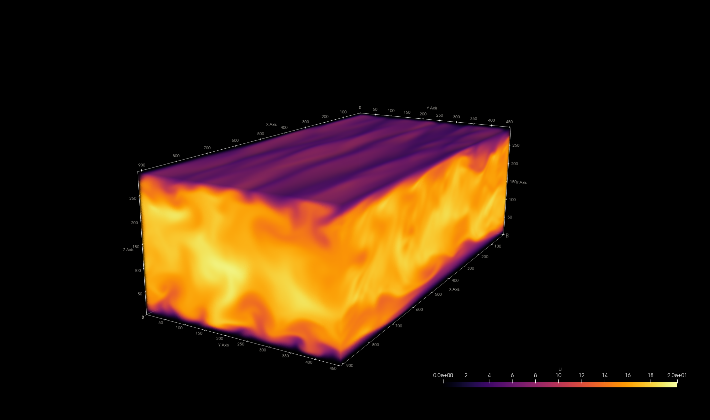
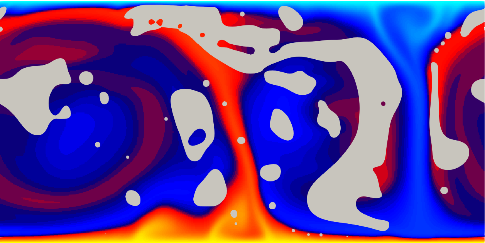

Codes
- MHIT36: DNS of Navier-Stokes in HIT + phase-field method (finite difference + cuDecomp) GitHub repo

- FLOW36: DNS of Navier-Stokes in channel flow + phase-field method (CPU and GPU runs) GitHub repo

- TCF36: DNS of Navier-Stokes in channel flow + phase-field method + passive scalar, spin-off based on MHIT36 GitHub repo

- MRBC36: Multiphase Rayleigh-Bénard GitHub repo
